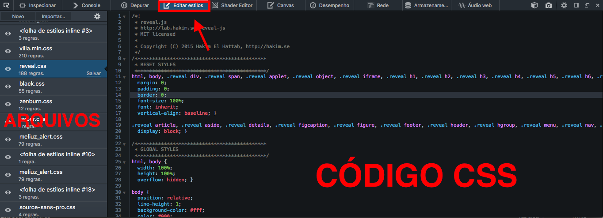
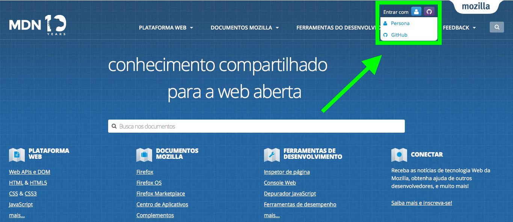
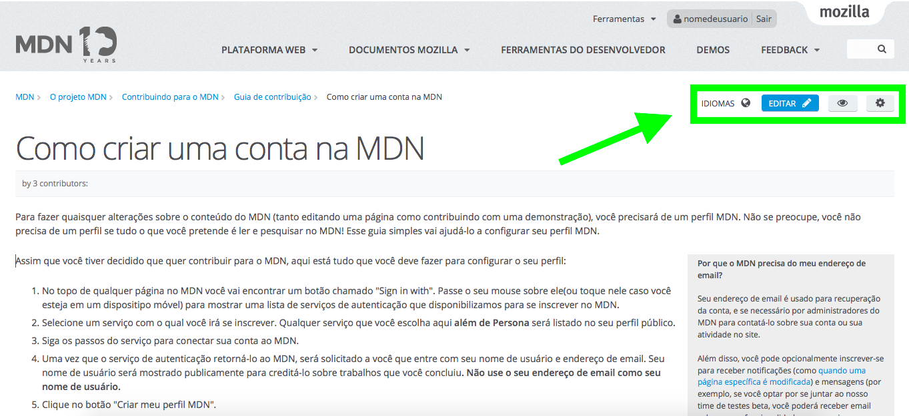

DevTools Firefox
Torne-se um Mozillian!
LINK DA APRESENTAÇÃO
jaimemaretoli.com/devtools
Apresentação Criada pela Comunidade Mozilla Brasil | Jaime Maretoli e Nelson Dutra
Conheça o Manifesto Mozilla e saiba o que pensamos e como pensamos.
Lutamos por uma internet de todos para todos.
Jaime Maretoli
- Técnico em Informática formado pelo Senac
- Bacharelando em Ciência da Computação
- Pesquisador na área de Desenvolvimento Móvel
- Mozillian desde Fevereiro de 2015
- Membro do Hackerspace Laboratório Hacker
- Sempre em eventos por aí...
Nelson Dutra

- ...
- ...
- ...
- ...
- ...
- ...
Você conhece a Mozilla?

História
- O Projeto Mozilla nasceu com o lançamento do código fonte do navegador Netscape
- Lançamento do Mozilla 1.0: A Primeira Grande Versão
- Criação Fundação Mozilla Sem Fins Lucrativos
- Na versão 1.0 do Firefox, +10.000 apoiaram à missão Mozilla pagando um anúncio New York Times
História

História
- Reorganização da Fundação: Criação da Corporação Mozilla
- Recorde Guinness World Record: Maior número de downloads em 24h
- 1º Navegador Móvel com complementos: Firefox Móvel tornou-se disponível na plataforma Nokia Maemo
- Início do projeto do Firefox OS
- Mozilla nomeada a empresa de Internet mais confiável
- Firefox OS Lançado na Mobile World Congress
- Firefox OS com primeiros telefones comerciais na Espanha
- Lançamento do Firefox redesenhado e com muitas novidades
Comunidade
"Trabalha em conjunto para manter a Internet viva e acessível para que todos sejam contribuidores e criadores da Web com uma plataforma de código aberto"
"Hoje a Mozilla tem colaboradores em cada continente, incluindo a Antártida (onde o Firefox é usado por 80% da população)"
"A comunidade ajudou a traduzir o Firefox para 70 idiomas, tornando o navegador disponível para mais de 90% da população mundial"
Manifesto Mozilla
https://www.mozilla.org/pt-BR/about/manifesto/
Na prática...
"Fazemos parte de uma comunidade global de pessoas que acreditam que a inovação, liberdade e oportunidade são a chave para a saúde contínua da Internet"

"Somos programadores, advogados, cientistas, designers, estudantes... Somos pessoas comuns que lutam para garantir a sua liberdade e direito de expressão."
Alguns Produtos e Projetos...
Firefox OS
"Foco nos mercados emergentes. Onde o acesso a esses equipamentos é caro e limitado"

Arquitetura
Gonk
Kernel GNU/Linux baseado no AOSP (Android Open Source Project), Device drivers e camada de abstração do hardware
Gecko
Motor de JS e Renderização de HTML, APIs amigáveis para acesso ao hardware
Gaia
Coleção de aplicativos web que fazem a UI
Novos Mercados
Hardware Acessível
Principal
Experiência: Tecnologias Web
Recursos
Geolocalização
Bluetooth
Push Notifications
Bateria
Contribuição da Comunidade
Evolução das WebAPIs
Usabilidade
Localização
Desenvolvimento de Apps
Disseminação
E muitos mais...
Mozilla Firefox
"Orgulhosamente sem fins lucrativos, a Mozilla produz produtos como o Firefox com a missão de manter o poder da Web nas mãos dos usuários, pelo mundo inteiro e com 4 bilhões de complementos já instalados até agora"
Mozilla Firefox

Ferramentas de
Desenvolvimento
Barra de Ferramentas
Menu Ferramentas > Desenvolvedor Web > Exibir Ferramentas
Atalho: F12

Inspetor
Menu Ferramentas > Desenvolvedor Web > Inspetor
Atalho: Option + ⌘ + I ou CTRL + I
"Mover o mouse pela página, obter informações de elementos e alterá-los"
Console
Menu Ferramentas > Desenvolvedor Web > Console Web
Atalho: Option + ⌘ + K ou CTRL + K
"Permite ver mensagens de erro e outras informações..."
Depurador
Menu Ferramentas > Desenvolvedor Web > Depurar
Atalho: Option + ⌘ + S ou CTRL + S
"Permite percorrer o JavaScript, examinar ou modificar seu estado para ajudar a localizar bugs"
Monitor de Rede
Menu Ferramentas > Desenvolvedor Web > Rede
Atalho: option + ⌘ + Q ou ctrl + Q
"Mostra toda a rede que o Firefox solicita e seus detalhes, como quanto tempo leva cada pedido"
Editor de Estilos
Menu Ferramentas > Desenvolvedor Web > Rede
Atalho: shift + fn + F7 ou shift + F7
"Mostra todos os estilos, e editá-los."
Visualizador de Design Responsivo
Ferramentas > Desenvolvedor Web > Modo Design Adaptável
Atalho: ⌘ + option + M ou ctrl + shift + N
"Visualizar o Responsivo da Página"
Visualizador 3D
Sem atalho, mas podendo ser configurado.
"Faz com que seja fácil de visualizar o aninhamento do conteúdo. Em blocos de HTML."
WebIDE | Simuladores
Ferramentas > Desenvolvedor Web > WebIDE
Atalho: shift + F8
"Permite criar, editar, executar e depurar Web Apps"
E muito mais...
Mozilla Developer Network
developer.mozilla.org
Mozilla Developer Network
developer.mozilla.org
Criando uma conta na MDN
developer.mozilla.org
Aprenda, Crie, Edite, Traduza, Melhore...
developer.mozilla.org
Mozilla Learning Network
https://teach.mozilla.org/
"Oferece programas, instruções, documentos e uma comunidade para ajudar pessoas a aprender o mundo digital"
X-Ray Goggles
webmaker.org/goggles"Permite visualizar e alterar páginas da web de forma mais intuitiva"
X-Ray Goggles
webmaker.org/gogglesThimble
thimble.mozilla.org"Ajuda a aprender a Web, criando e remixando projetos da Web"
Thimble
thimble.mozilla.orgWebmaker
beta.webmaker.org"Permite criar, descobrir e compartilhar conteúdos de seu dispositivo móvel"
Webmaker
beta.webmaker.orgwww.mozillabrasil.org.br
Mudança
- Novos rumos:
- Reestruturação
- Maior foco na qualidade;
- Enfrentamento com outra plataformas;
- Migração de apps de outras plataformas;
- Que venha ainda mais o sucesso!
Obrigado!
- E-Mail - jm@jaimemaretoli.com
- Site Pessoal - jaimemaretoli.com
- Mozillan - https://mozillians.org/u/jaimemaretoli
- Linkedin - https://br.linkedin.com/in/jaimemaretoli
- Twitter - https://twitter.com/jaimemaretoli
- GitHub - https://github.com/jaimemaretoli
- diaspora* - https://diasporabr.com.br/u/jaimemaretoli
LINKS | DÚVIDAS? | SUGESTÕES
- Mozilla - www.mozilla.org
- Mozilla Brasil - www.mozillabrasil.org
- FB Mozilla Brasil - fb.com/mozillabrasil
- Listas - lists.mozilla.org/listinfo/community-brasil
- MDN - developer.mozilla.org
- Webmaker - webmaker.org
- SUMO - support.mozilla.org/pt-BR/home/
- support.mozilla.org/pt-BR/get-involved/army-of-awesome
- Reveal.JS - github.com/hakimel/reveal.js
- http://developer.mozilla.org/
- http://mozilla.org/aurora
- http://firefoxosbooks.org/
- https://github.com/mozilla/firefoxos-quick-start